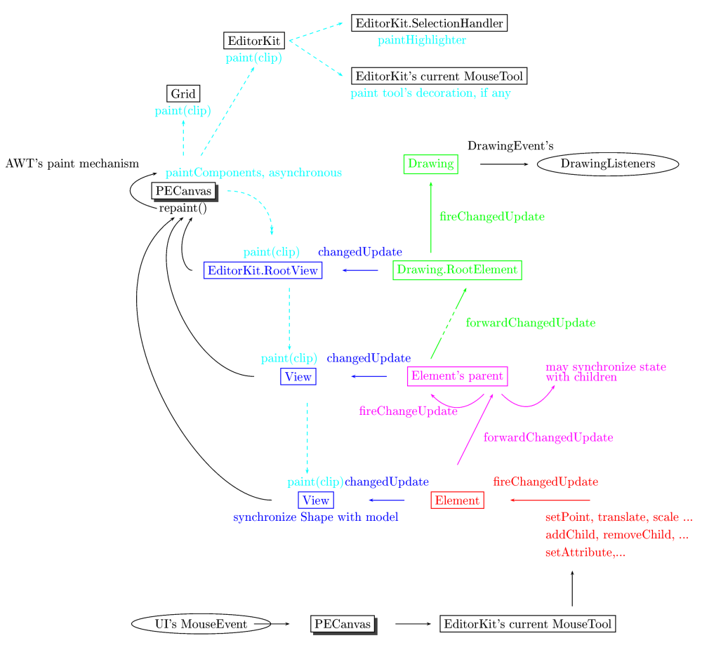

jPicEdt library core classes and packages. Package structure follows the
model-view-controler paradigm. See documentation below for details about the VMC implementation in jPicEdt.
@since PicEdt 1.0
Drawing class and Element interface: a document model for vector-graphicsView interface: rendering the modelDrawingEvent's dispatching scheme: keeping things in touchEditorKit class: processing UI eventsFormaterFactory class: exporting documents to LaTeX formatContentType interface: lumping things together[todo] a short introduction…
Drawing class and Element interface: a document model for vector-graphics
The document model mostly comprises classes in
the jpicedt.graphic.model package. It is built on top of:
Element interface: this specifies the general contract for graphics primitives
(see e.g. DefaultLeafElement
and its subclasses) or composite elements
(see e.g. BranchElement
and PicGroup)
which may be added to the model ;Drawing class: this is the document's model, designed as a tree-like container
for Element's,
the tree structure being inforced by the
capability of Element's to have a parent and possibly children.jpicedt.graphic.event.DrawingEvent class: this allows
Element's to communicate with their hosting Drawing,
and the latter to post events to registered listeners
interested in change in the document's content (e.g. views, selection-handlers, UI components,…).
The root-element of the document is actually an instance of Drawing.RootElement
which inherits from BranchElement:
each Element that is directly added to the Drawing
is actually added as a child of Drawing.RootElement ;
yet this is rather internal machinery, and developpers may not have to bother with
RootElement's methods, and
might better use the Drawing's API to alter the document's content. In a way, the Drawing class may be
simultaneously considered as the hosting document AND the document's root-element.
Adding an Element to the Drawing thus effectively makes it a node a tree,
where each node is able
to communicate with its parent or as it is with its children. This makes it possible for any
Element
belonging to the model to post DrawingEvent's to the entire tree, so that e.g. the hosting
Drawing gets
eventually informed of changes that may have occured in the document's content. It is then up to the
the Drawing to decide whether to post these event or not to registered listeners.
View interface: rendering the modelThe document's view is aimed at rendering a Drawing ; most classes related to the rendering of the model are
located in the jpicedt.graphic.view package ; besides, some other classes of interest may be found in the
various format-specific packages under jpicedt.format.
Each Drawing may or may not have a view attached to it. Attaching a view to a model is required only
as soon as the model has to be rendered on screen. For instance, parsers create and populate a Drawing
without ever having to render it on screen. If a drawing has an associated view, then synchronization
between the view and the model is based on an event-dispatching mechanism similar to the
AWT's event-dispatching scheme (see DrawingEvent's documentation below).
The view has a pseudo tree-like structure which mimics that of the associated Drawing, and is
based on a cross-reference mechanism:
every an Element may have a jpicedt.graphic.view.View directly associated with it, in which
case the View also holds a reference to the Element it is associated with.
Hence this is a pseudo tree-like structure, in that an Element's View doesn't hold any direct
reference to its parent's view ; instead, by holding a cross-reference to the Element it is associated with,
it indirectly knows of its parent's view by relying
on the Drawing tree structure. To sum up: let X and Y be two Element's of a Drawing, where Y denotes X's child,
and Xv, Yv the view attached to them ; then for Yv
to reach its parent's view, it must rely on the following mechanism:
| Model | View | |
|---|---|---|
| X | →: getView() | Xv |
↑: getParent() | ||
| Y | ←: getElement() | Yv |
ViewFactory'sThe view-tree is basically populated by
calling Drawing.setViewTree(ViewFactory f), as soon
as one wants the model to be rendered. The given
jpicedt.graphic.view.ViewFactory
knows how to produce View's that are appropriate for each Element ; hence, there may be (and there
are in effect) different ViewFactory's depending on the kind of content-type to be rendered (e.g. PsTricks,
eepic/epic, SVG-XML,…). This approach allows ViewFactory's to be plugged on-the-fly by EditorKit's when
the content-type of the model to be rendered changes.
For the sake of clarity, the view-tree populating during PECanvas's initialization
is illustrated hereafter in sketchy outlines:
PECanvas's contructor, setContentType() is called with the kind of content-type
given as argument to the constructor ;setEditorKitForContentType(): a new EditorKit approriate for the given content-type
is created, then linked to the hosting canvas (through a call to EditorKit.install(canvas), which
allows MouseEvent's to be properly dispatched to the editor-kit) ;Drawing is created (usually by asking the editor-kit to create one that is appropriate for
the given content-type, although jpicedt currently models all content-types with the same Drawing class)ViewFactory appropriate for the given content-type
(see documentation: EditorKit.ViewFactoryWrapper)
Drawing.setViewTree(view-factory): this actually
calls setViewFromFactory(view-factory) on Drawing.RootElement,
which populates the rest of the tree by calling setViewFromFactory(view-factory) on all of its children. Whenever the content of an Element changes, the View associated with the Element is asked to update itself
by means of the changedUpdate() method: this usually means
(as implemented in DefaultViewFactory) synchronizing
some cached data with the Element (a Shape, a Stroke, …).
This however is not enough for the real screen to reflect the change: for that to happen, the hosting JComponent
must be asked to repaint itself through the asynchronous AWT's repaint mechanism.
Now because any View belonging to the view-tree knows of its hosting
container (= the Swing component that really
paints things, usually an instance of PECanvas,
it can easily — by means of the repaint() method in the View interface —
ask the container to repaint itself (or a part of itself, see documentation in
graphic.view.AbstractView.repaint()).
This indirectly invokes, through the asynchronous AWT painting mechanism,
paintComponent() on PECanvas,
the latter being implemented so as to invoke the following paint() methods:
Grid object attached to the PECanvas; Drawing.RootElement (this view is implemented as an
inner class of EditorKit, see documentation
about EditorKit.RootView below):
this in turn invokes the paint() method on every child of this view ;EditorKit in which this PECanvas is installed: this will first invoke paint() on EditorKit.SelectionHandler,
i.e. paint the highligher (small green/red squares for Element's control-points, tangents for Bezier
curves, etc…), and then invoke paint() on
the MouseTool that is currently active in EditorKit
(this allows this MouseTool to do some specific rendering that makes sense with the operation
being currently carried out, e.g. painting a selection rectangle, …).DrawingEvent's dispatching scheme:
keeping things in touch A Drawing has the capability of posting DrawingEvent's to registered listeners to signal a change
in the content of the model it holds. This may be used e.g. by View's, selection-handlers, or by any part
of the UI to keep their state synchronized with the content of the model. Besides, DrawingEvent's contain enough
information regarding the change in the document's content to allow receivers to efficiently optimize
their re-synchronization with the model.
As implemented in the AbstractElement abstract class,
any change in the content of an Element, e.g. by calling the setPoint method, eventually
calls fireChangedUpdate: this in turn
View (if any) to keep its state
synchronized with the model by calling view.changedUpdate (hence in this abstract implementation of
the Element interface, the view/model synchronization is based on a direct peer-to-peer messaging, rather
than by registering the entire view tree as a DrawingListener, and waiting for the event to reach the
top of the Drawing's tree-model until the View can update ifself ; this is probably faster, yet this
scheme doesn't make use of all the capacilities of the event-dispatching scheme).
parent.forwardChangedUpdate:
Drawing.RootElement, which then enables its hosting Drawing to dispatch the event to registered listeners.This mechanism is illustrated in the figure below:

EditorKit class: processing UI events[todo]
EditorKit creates ViewFactory's
…
There are two important inner classes in EditorKit for that matter: ViewFactoryWrapper and RootView.
These classes currently have package access, hence documentation about them is mainly aimed at helping developpers
to get some grasp of the machinery behind the EditorKit class.
An instance of EditorKit is usually instanciated by a ContentType,
which thereby provides it with an approriate
ViewFactory. However, this ViewFactory may to all probabilities inherit from
DefaultViewFactory, since it is
by far the easiest way for developpers to implement their own content-type classes. Yet if DefaultViewFactory
can create View's for every Element in the
graphic.model package, it doesn't provide any root-view to be
associated with Drawing.RootElement: basically, such a view has to:
DrawingEvent's posted
by Drawing.RootElement (this is the case e.g. when a new Element is added to the drawing), by forcing
the hosting Swing container (probably a PECanvas) to repaint itself ;hitTest() method specified in the View
interface so as to dispatch to all the Element's in the Drawing successively.PECanvas), so that any view in the tree may retrieve its
container by asking its root-element. Since RootView is an inner class of EditorKit, and EditorKit has a reference
on the PECanvas it is installed in (see
the install() method), this was pretty easy to
implement.
Hence we have defined an inner class of EditorKit for that
purpose: when asked to create a View for
a Drawing.RootElement, ViewFactoryWrapper returns a
specific RootView (also implemented as
an inner class of EditorKit) ;
otherwise it delegates to the ViewFactory provided as a constructor
to EditorKit; actually, ViewFactoryWrapper
may even do better, since it first checks if the Element to create the View for does implement the
ViewFactory interface itself, in which case the given Element is asked FIRST to create a View for … itself
(this allows developpers to lasily design new Element's without having to extend the whole DefaultViewFactory
machinery: they'd just have to make their new Element
implement the createView() method ; of course this approach
is valid as long as the rendering of the new Element doesn't depend on the current content-type being installed
in PECanvas).
SelectionHandler: selecting, copying,
pasting.[todo]
MouseTool's: pluggable behaviour for mouse-event
handlers[todo]
PEAction's: sharing action-handlers across
jPicEdt[todo]
FormaterFactory class: exporting documents to LaTeX format[todo]
ContentType interface: lumping things
together
The jpicedt.graphic.ContentType class lumps the three
components of the VMC paradigm together, since it is able to create
components appropriate for the kind of content-type it represents. In
particular, this class knows how to create an EditorKit,
which is enough to create the two remaining components by
calling kit.createDefaultDrawing
and kit.createDefaultViewFactory.
Besides, ContentType is able to create a jpicedt.graphic.io.FormaterFactory
which knows how to format a Drawing to ASCII text.
Concrete implementation of ContentType's,
together with there associated factories, are located in subpackages of
jpicedt.format. There currently exists content-types for PsTricks, LaTeX's picture environment,
and the eepic package.
Contributing a new content-type (e.g. PostScript, metapost, …) therefore imposes:
ContentType interface ;DefaultViewFactory if specialized rendering behaviour is needed (e.g. no colour rendering)FormatterFactory ;DefaultParser
by calling the addGrammar method. [todo:more documentation about implementing parsers].
Last-upd: January 20th 2003